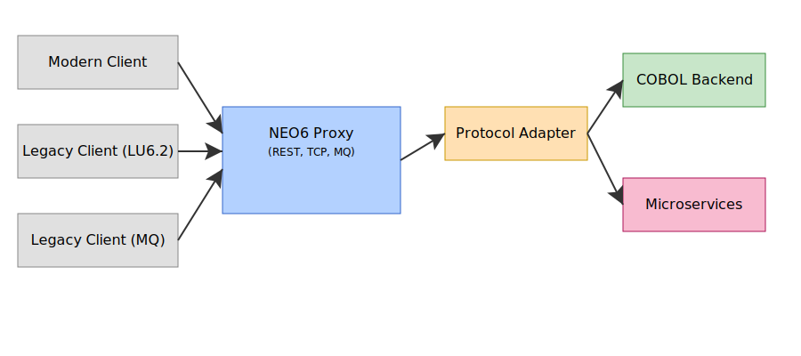

Project Overview
NEO6 is a modular, extensible platform for legacy modernization and interoperability, focused on enabling seamless integration between modern applications and mainframe/COBOL systems. The project is organized into several subfolders, each with a specific role in the overall architecture.
Architecture Diagram
The diagram above shows the main data flows and integration points between modern clients, the NEO6 proxy, protocol adapters, and legacy COBOL backends.
Module Map
- agent-runtime/: Core runtime and orchestration logic for NEO6 agents.
- aiops-agent/: AIOps (monitoring, anomaly detection, remediation).
- cobol-agent-core/: COBOL agent integration libraries.
- docs/: Documentation, diagrams, and technical references.
- infra/: Infrastructure-as-code, deployment scripts, CI/CD.
- neo6-protocols/: Protocol adapters and traits for all supported protocols (LU6.2, MQ, REST, TCP, JCA, etc).
- neo6-proxy/: Main proxy server, exposes REST, TCP, MQ endpoints, routes to backend.
- python-agent-core/: Python agent runtime and libraries.
- vsr-tools/: Utility tools for development, migration, and testing.
neo6-proxy
neo6-proxy is a high-performance CICS transaction proxy written in Rust. It exposes REST, TCP, and MQ endpoints to modern and legacy clients, routing requests to the appropriate backend (COBOL, microservices, etc). Features include configuration, logging, metrics, and transaction mapping logic.
REST API Endpoints
| Method | Endpoint | Description |
|---|---|---|
| POST | /invoke | Invoke a COBOL transaction synchronously. |
| POST | /invoke-async | Execute asynchronous invocation. |
| GET | /status/{id} | Query invocation status/results. |
| GET | /health | Basic health check. |
| GET | /metrics | Prometheus metrics exposition. |
Example payload for /invoke
{
"transaction_id": "TX01",
"parameters": {
"account_number": "1234567890",
"amount": 500.25
}
}
Other Protocols
- TCP LU6.2 Style: Port 4000, binary/structured text, for legacy middleware integration.
- IBM MQ: Asynchronous, C bindings, request/response queues.
neo6-protocols
This subproject provides the base traits and helpers for implementing a CICS Protocol Proxy. It enables receiving and interpreting requests from multiple client applications—both modern and legacy—that consume transactions from the CICS environment.
Supported Protocols
- LU6.2 / APPC
- IBM MQ
- HTTP(S) + JSON/XML (REST/SOAP)
- TCP/IP Proprietary Protocols
- JCA / CICS Transaction Gateway
Example: Implementing a Protocol Handler
use neo6_protocols::protocol::{ProtocolHandler, log_protocol_invoke};
struct MyProtocol;
impl ProtocolHandler for MyProtocol {
fn invoke_transaction(&self, transaction_id: &str, parameters: serde_json::Value) -> Result {
log_protocol_invoke("myprotocol", transaction_id, ¶meters);
// Invocation logic...
Ok(serde_json::json!({"result": "ok"}))
}
}
Developer Guide
Project Structure
- Each protocol is implemented as a Rust crate in
neo6-protocols/. - The proxy server is in
neo6-proxy/and can be run withcargo run. - Configuration files are in
neo6-proxy/config/. - Tests are in
neo6-proxy/tests/andneo6-protocols/tests/.
Architecture Diagram (Mermaid)
graph TD
A[Modern Client] -->|REST/gRPC| B[NEO6 Proxy]
A2[Legacy Client] -->|LU6.2| B
A3[Legacy Client] -->|MQ| B
B --> C[Protocol Adapter]
C --> D[COBOL Backend]
C --> E[Microservices]
How to Extend
- Add a new protocol crate in
neo6-protocols/and implementProtocolHandler. - Register the new protocol in the proxy's handler logic.
- Update configuration and tests as needed.